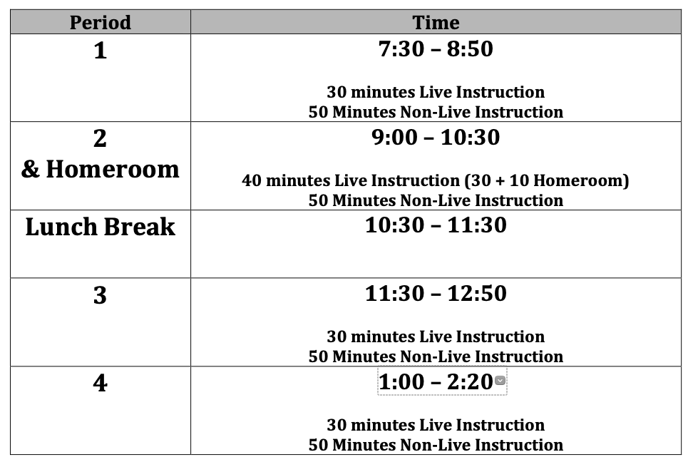

Accessibility
General Accessibility Guidelines
 Remember these accessibility guidelines from the U.K. Accessibility Office, including:
Remember these accessibility guidelines from the U.K. Accessibility Office, including:
- Use clear language and consistent layouts
- Use bullet points and simple sentences
- Avoid bright, busy layouts
- Use readable font sizes and good contrast
- Don’t bury information in downloads
- Use headings, subheadings, and videos
- Spread interactive out over a document
Videos and Video Chats
Videos and video chats need two primary supports: captions and accessible visuals.
Captioning
In addition to benefiting d/Deaf and hard of hearing users, captions can benefit users who are who are in noisy environments, users who get distracted and miss a word, and supports users in taking notes. Captions also have tremendous value for users with autism, ADHD, Down’s Syndrome, and English Learners.
Captions should contain the following elements:
- All spoken words from a video call or presentation
- Any relevant background noise (i.e. if someone is speaking in a crowded room, the crowd noise doesn’t have to be transcribed but if a noise (like a school bell) is relevant and adds value to the video, it should be included in the captions in italics and in square brackets.
- Song lyrics in the background should be included in captions as well.
- Speaker indications. If the person speaking is not the person on the screen in italics and parentheses.
- It is not necessary to include words that are already on the screen from a slide or visual aid.
- Video Captioning Style Guide from University of Melbourne
Captions can either be human-generated or machine-generated. Human-generated captions are the gold standard as machine-generated captions are prone to error and have trouble transcribing accents and sounds over a video conference or from noisy environments. Human-generated captions, however, are time consuming to create and services to create them can be expensive. Students do have a right to request human-generated transcriptions. In live meetings, you have a few options for generating live captions:
- Human-Generated Captions
- Zoom has built-in functionality to type captions in the meeting. A person can be assigned to type captions live in a meeting.
- Companies exist that will provide this as a service. NC State has convenience contracts for live captioning.
- Machine-Generated Captions
- Otter.ai will generate a transcript page for a meeting in Zoom live. The transcript will be in a separate window.
- Google Meet has live support for closed captioning.
- Google Slides and Microsoft PowerPoint have built-in caption support. These captions are limited as they will not display if you switch applications away from the slide deck, and have trouble recognizing other speakers on the Zoom call. Additionally, because they’re embedded in the slide show, they’re “burned in” to the recording and cannot be removed. This may create issues for you later if you want to add human-generated captions to a recording.
- Using Open Broadcaster Software (OBS), and a website called WebCaptioner, it is possible to add a caption window to your webcam image, and use this as a camera in Zoom or Google Meet. Like PowerPoint and Google Slides, these captions only recognize the speaker on one computer and are “burned in” to the recording.
In a pre-made video or a meeting recording, captions are a bit easier:
- Machine-Generated Captions
- Zoom will automatically create a webpage with captions for cloud recordings, if enabled.
- When uploading a video to YouTube, YouTube will automatically create captions within a few hours after upload.
- Human-Generated Captions
- Rev.com offers a service that will transcribe video and audio files for you. Rev.com can automatically push corrected captions to YouTube.
- Automatic captions in YouTube can be corrected to be more accurate. If a video is kept unlisted or private, you can keep it from being discoverable while enabling these features.
Accessible Visuals
Keep in mind that the PowerPoints and other materials shared on screen sharing during a Zoom call, or embedded in a video, are not accessible. It’s recommended that you share slide decks with users ahead of time and share the link in the chat so that users can access them. If you share your screen during a presentation, narrate your actions so that someone can recreate them. If necessary, you may need to create an audio description track to narrate actions separate from the main video.
Images
In presentations, reports, and web pages, images need to be annotated with alternative text (also called an alt-tag) that describes the content of the image. This allows users who can’t access the image (due to a visual impairment, low bandwidth connection, etc.) to understand the contents. Alternative text must be used for every image in a document unless the image is purely decorative and serves no functional purpose in the document. Alt text should also describe the contents of the image, and not the image itself. Consider the example below. Using alt-text of “The water cycle” for this image is inadequate because it does not describe the contents of the image. You would need to use a describe tag such as “The water cycle: the process by which water in the oceans evaporates, condenses to form clouds, falls to the ground as rain, and is again collected in the ocean.” The content of an image should also be reflected in a document. For example, a graph can be alt-tagged, but the description of the key findings (and ideally, a data table) should be included in a document. For complicated charts, it is acceptable to reference the discussion section of a paper if the information conveyed there will explain the chart. Alt tags are added differently in different applications. In Moodle, there is an alt-text field when adding an image. In Office and Google Docs, you can right-click on an image to add the alt text. You can also add alt-text on Twitter, Facebook, and Instagram.

In addition, it is a best practice to avoid images that are all text, and creating these elements as text instead. Consider the example below. Instead of using an HTML table, this school posted an image of their bell schedule. However, because the text is contained within the image, it is unable to be read by screen readers or translation software. 
Use of Color, Charts and Graphs
In addition to creating accessible images, the use of color in resources creates accessibility issues as well. To support those with color blindness and other visual impairments, foreground and background colors in documents should always be high-contrast. The WebAIM Contrast Checker can tell you based on the font size if a foreground and background color are high enough contrast.
In a chart, each visual element should also contrast sufficiently. For example, in a bar graph, each bar should be sufficient contrast from each other bar (see this guide from Penn State). In addition, color should not be the only indicator of information. For example, labeling your axes, using shedding patters, etc. to differentiate between data points.
Microsoft Office and Google Drive
Whether in webpages or in documents, many of the same accessibility rules above apply - images should have alt text, table rows should be labeled, etc. In addition, you should use semantic styling in all documents, including Word Docs, Google Docs, and HTML files. Semantic styling involves identifying elements in a document by what they are, rather than how they look. Whereas typically, to designate a header in Google Docs, you might simply bold the text, when styling semantically, you would use the styles pane to designate an element as a header, and then style the header through the styles pane.
PDF Files
The PDF format has significant problems with accessibility, especially when designed natively in Acrobat. The best practices are to design in Word, and then export to PDF. Confirm accessibility in Word before exporting. Additionally, it is recommended to make documents available in another format.
Documents that are scanned to PDF are not accessible.